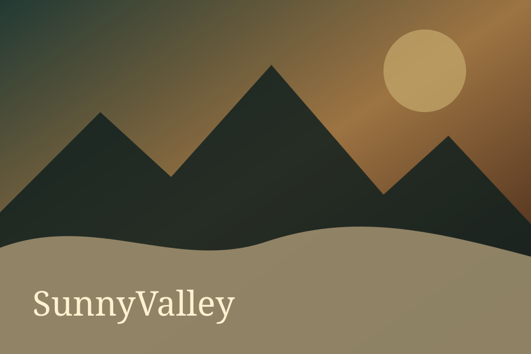

Esta noite terá neblina.
Evite deslocamentos desnecessários por estradas secundárias durante a madrugada.
Península Norte • San Andreas
Desde 1898, SunnyValley recebe viajantes em busca de águas tranquilas, montanhas imponentes e férias que ninguém consegue esquecer.

Bem-vindo ao vale
SunnyValley é aquele refúgio dos sonhos que parecia existir apenas em cartões-postais: praias de águas calmas, florestas densas, trilhas ecológicas e uma arquitetura histórica cheia de personalidade.
Durante o dia, o comércio se movimenta, as pousadas servem café fresco e os moradores recebem visitantes com uma hospitalidade impecável. Pegue o ônibus, atravesse de balsa ou siga pela estrada do norte. Seu ingresso já sabe o caminho.
“Quem entra no vale simplesmente não quer ir embora.”

Guia oficial de turismo
Escolha seu passeio, pegue seu ingresso e siga as recomendações dos guias locais. Elas existem exclusivamente para o seu conforto.


Arquivo oficial da cidade
Se você recebeu um cartão-postal de SunnyValley, considere-se oficialmente convidado! Pegue seu ingresso e escolha como deseja iniciar a viagem: embarque no ônibus de turismo pelas estradas do norte ou atravesse as águas tranquilas a bordo da nossa balsa.
SunnyValley é cercada por praias de águas calmas, florestas densas perfeitas para acampamentos em família, trilhas ecológicas e uma arquitetura colonial charmosa.
Quando o sol desaparece atrás das montanhas, a atmosfera muda. O vento esfria, os pássaros silenciam e uma neblina espessa rasteja pelo horizonte.
Naturalmente, tudo isso faz parte do folclore local.
Jornal de SunnyValley
Relatos sobre “mulher nas estradas”, luzes entre as árvores e vozes sem origem deixam moradores apreensivos.
Ler a edição →
Evite deslocamentos desnecessários por estradas secundárias durante a madrugada.
Luzes, vozes e figuras voltam a ser relatadas em trilhas esquecidas.
Praia principal recebe fogueira, música e celebração às 18h.
Imóveis em SunnyValley
Casas, mansões e penthouses para quem chegou como turista e decidiu ficar. Clique para abrir o canal de atendimento e fale diretamente com um responsável.
Residências confortáveis próximas às águas, trilhas e serviços da cidade.
Propriedades amplas, terrenos reservados e vistas privilegiadas.
Apartamentos premium, acabamentos exclusivos e vista excelente da neblina.
Manual oficial completo
O medo pertence à história. O respeito pertence aos jogadores.
Apoie o projeto
Benefícios para construir uma vida confortável no vale. Nenhum plano concede imunidade às regras, prioridade em denúncia ou controle da lore.

Seu ônibus está quase partindo
Pegue sua passagem, entre no Discord e aproveite o passeio enquanto ainda há luz.
Compre sua passagem